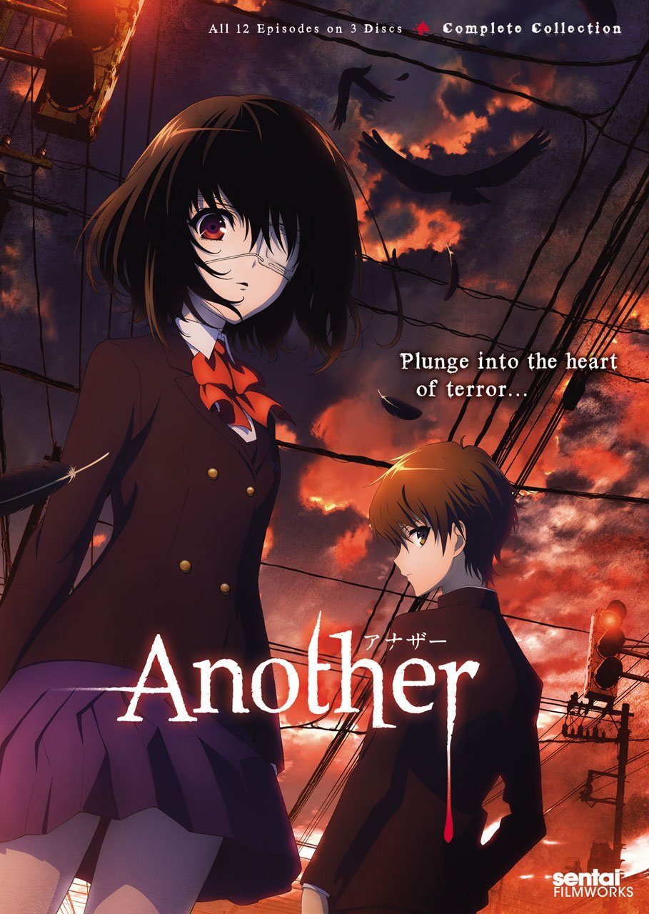

<div class="container mt-5">
  <div class="card">
    <div class="head"style="margin: 20px;">
      <h2>Recommended Movie</h2>
    </div>
    <div class="row mt-4" style="margin: 70px;">
      <div class="col-md-5">
        
      </div>
      <div class="col-md-6">
        <h3>Another</h3>
        <p>Another is a Japanese mystery horror novel by Yukito Ayatsuji. The story focuses on a boy named Kōichi Sakakibara who, upon transferring into Yomiyama Middle School and meeting the curious Mei Misaki, 
          finds himself in a mystery revolving around students and people related to his class falling victim to gruesome, senseless deaths.</p>
        <ngb-rating [(rate)]="current_rate"></ngb-rating>
        <hr>
        <pre>Rate: <b>{{current_rate}}</b> of 10</pre>
      </div>
    </div>
  </div>
</div>

